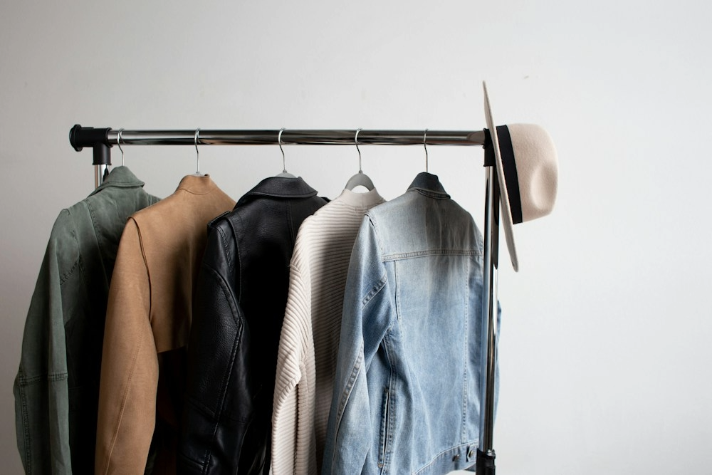

Was suchst du?
Wir sprechen darüber, was dir wichtig ist: Komfort, Länge, Bundhöhe, Farbe oder ein bestimmter Look.
Wir helfen dir weiter
Jede Marke und jeder Schnitt kann anders ausfallen. Gemeinsam finden wir heraus, worin du dich wohlfühlst.
Beratung vor Ort erleben
So läuft es ab
Du musst nicht genau wissen, wonach du suchst. Wir helfen dir.
Wir sprechen darüber, was dir wichtig ist: Komfort, Länge, Bundhöhe, Farbe oder ein bestimmter Look.
Vergleiche verschiedene Passformen direkt und spüre, wie Material und Schnitt sitzen.
Wir geben dir Orientierung. Du entscheidest in deinem Tempo, welche Jeans am besten zu dir passt.
Gut zu wissen
Nein. Wir können verschiedene Größen und Schnitte ausprobieren, denn Größen fallen je nach Modell unterschiedlich aus.
Diese Website hat keine Online-Terminbuchung. Wenn du sicher planen möchtest, ruf am besten vorher an.
Das Geschäft führt verschiedene Jeansmarken. Welche Modelle aktuell verfügbar sind, erfährst du direkt im Store.
Nein. Diese Website ist bewusst kein Onlineshop. Sie hilft dir, den Store zu entdecken und deinen Besuch zu planen.